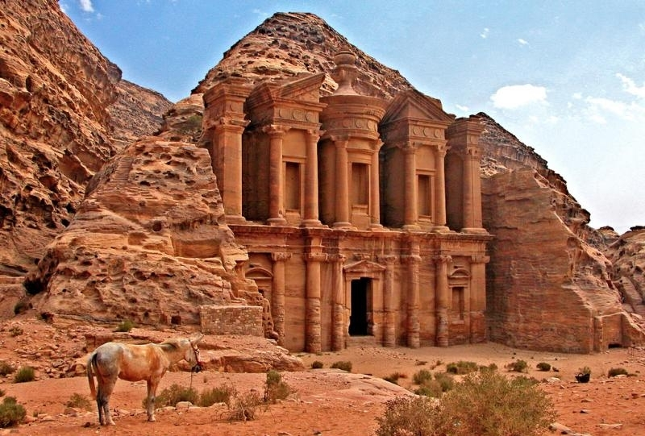

Pétra (de πέτρα petra, « rocher » en grec ancien (البتراء al-Baṭrāʾ en arabe) est une cité nabatéenne située au sud de l'actuelle Jordanie. C'est le pôle touristique majeur de ce pays. Fondée vers la fin du VIIIe siècle av. J.-C., par les Édomites, elle est ensuite occupée vers le VIe siècle av. J.-C. par les Nabatéens qui la font prospérer grâce à sa position sur la route des caravanes transportant l'encens, les épices et d'autres produits précieux entre l'Arabie du Sud, l'Égypte, la Syrie et la Méditerranée. Pétra a abrité à son apogée, vers l'an 50, jusqu'à 25 000 habitants. Vers le viiie siècle, la modification des routes commerciales et plusieurs séismes entraîneront l'abandon progressif de la ville. Tombé dans l'oubli à l'époque moderne, le site est redécouvert en 1812 par le monde occidental grâce à l'explorateur suisse Jean Louis Burckhardt. Les nombreux bâtiments, dont les façades monumentales ont été directement taillées dans la roche, en font un ensemble unique qui est inscrit, depuis le 6 décembre 1985, sur la liste du patrimoine mondial de l'UNESCO. La zone autour du site est en outre, depuis 1993, un parc national archéologique. L'érosion, les pluies et le tourisme — en progression constante depuis la fin du xxe siècle — sont cependant une menace pour la préservation du site et des actions sont entreprises pour enrayer la destruction des monuments. Les communautés locales bédouines, les Bedul, sont intégrées de manière participative à la préservation du site de Pétra et à l'économie du tourisme. Victime de l'instabilité politique de cette région du monde, le site connaît, au cours de certaines années, une baisse de la fréquentation touristique qui entraîne une perte de revenus pour les communautés locales qui vivent du commerce touristique.